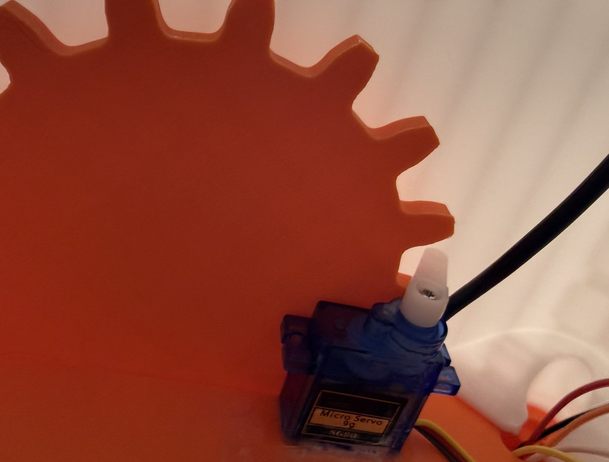
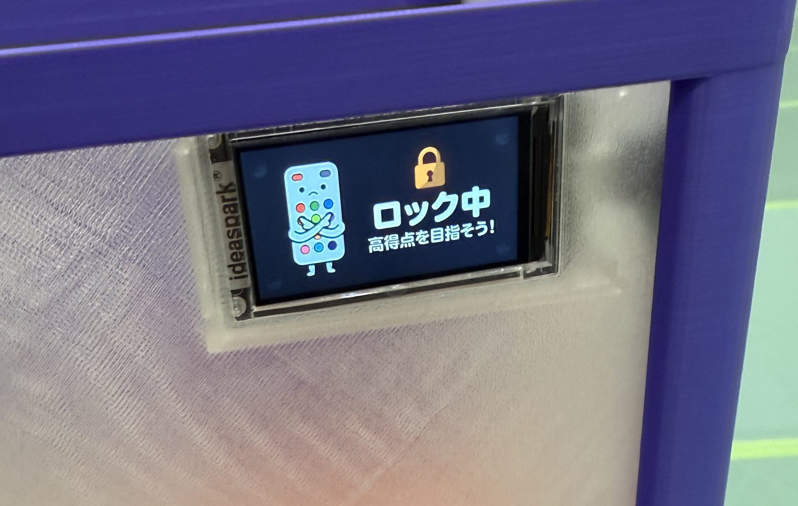
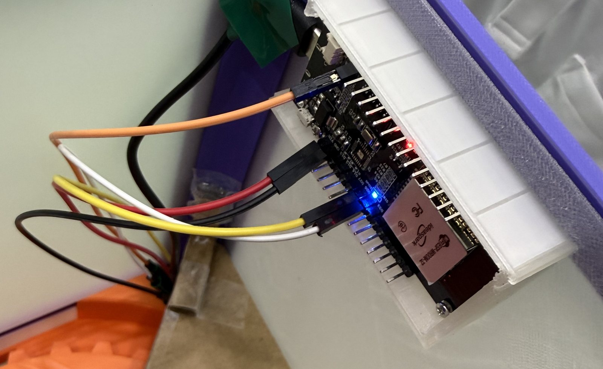
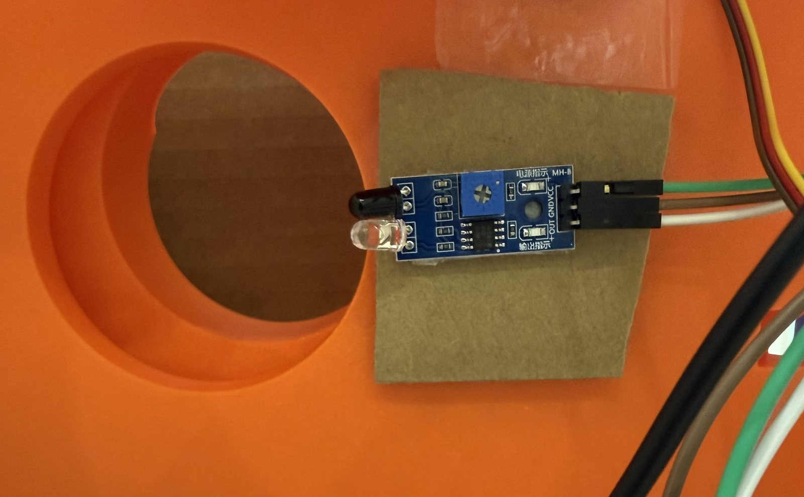
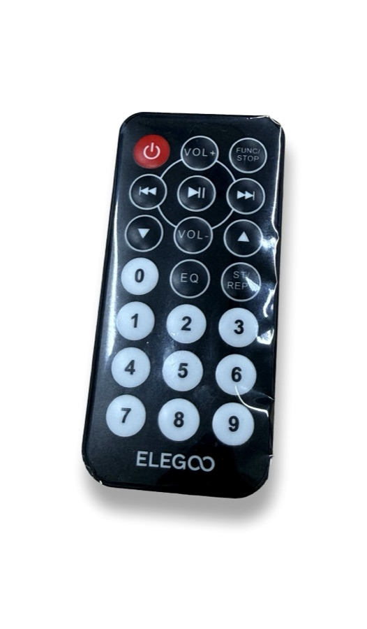

01まずは、動いているところを見てください
100円ショップのリモコンでリズムゲームを遊んで、自分で決めた目標スコアに届くと——横に置いてあるガチャガチャのロックが自動で開いて、実際にカプセルが出てきます。まずはその様子をどうぞ。
▶ 目標スコアを選んでリズムゲームをプレイ → 151点で目標(100点)を達成 → ガチャの画面が「かいじょ!まわしてね」に変わる → ハンドルを回してカプセルが出てくる → 自動で「ロック中」に戻る(約50秒・音が出ます)
見た目はただの「ゲームに勝ったらガチャが開く」ですが、この裏では赤外線・Bluetooth・WiFiという3種類の無線と、マイコン2台とPC1台が順番に仕事をしています。ここから先は、それがどういう部品と信号でできているのかを最初からほどいていきます。
02100円ショップで見つけた「300円のセンサー」
きっかけは、100円ショップで売っているリモコン式のLEDライト(税込330円)でした。18個のボタンが付いたリモコンで、ライトの色を12色に変えられます。


注目したのは「リモコンで操作できる」という部分です。リモコンが使えるということは、ライト側に赤外線を受け取るセンサーが必ず入っている、ということになります。
03分解してみると、こうなっていた
ケースを開けると、小さな基板が1枚。この上に2つの重要な部品が載っています。

この2つは、電子工学的には正反対の役割です。
- 赤外線受信部 — 目に見えない赤外線(光)を受け取り、電気信号に変えるセンサー。型番は
VS838という汎用パーツで、テレビやエアコンのリモコン受信部と同じ仕組みです - RGB LED — 電気信号を受け取って光に変えるアクチュエータ(出力側の部品)。赤・緑・青の光の量を変えて好きな色を作れます
「センサーで受け取る」→「マイコンで判断する」→「アクチュエータで出力する」。これは電子工学のほぼすべての製品に共通する基本パターンです。このページの後半で出てくるガチャのロックも、まったく同じ形をしています。
04ここをマイコンにつなぐと、受信できる
分解した基板から赤外線受信部(VS838)の足を3本取り出し、マイコン(ESP32)につなぎます。配線はこれだけです。
05実際に受信してみる:「シリアルモニタ」という画面
配線が終わったら、Arduino IDE(マイコン用の無料プログラミングソフト)で受信プログラムを書き込みます。Arduino IDEには「シリアルモニタ」という機能があり、マイコンが受け取ったデータをリアルタイムでPCの画面に表示できます。リモコンのボタンを1つずつ押すと、こんな出力が得られます。
IRrecv: receive pin = GPIO27, ready. [ボタン: 赤] 受信コード 0x1FE20DF [ボタン: 緑] 受信コード 0x1FEA05F [ボタン: 青] 受信コード 0x1FE609F [ボタン: 黄] 受信コード 0x1FE50AF [ボタン: ON] 受信コード 0x1FE48B7
※実際にシリアルモニタで確認できた値をもとに再現した表示です。ボタンごとに異なる16進数のコードが送られてくるのが分かります。
「ボタン1つ = 決まった16進数のコード」という対応表が作れれば、あとはプログラムで「赤が来たら◯◯する」と自由に処理できます。実際に取得した対応表の一部がこちらです。
| ボタン | 受信コード |
|---|---|
| ON | 0x1FE48B7 |
| OFF | 0x1FE58A7 |
| 赤 | 0x1FE20DF |
| 緑 | 0x1FEA05F |
| 青 | 0x1FE609F |
| 黄 | 0x1FE50AF |
ここまでで「100円ショップのリモコンが、自作プログラムの入力装置になった」ことになります。この12色ボタンを使って、色が流れてくるのに合わせて同じ色を押すリズムゲームを作りました。
06そもそも、ESP32ってなに?
マイコン(マイクロコントローラー)とは、「センサーの値を読む」「計算する」「部品を動かす」を1枚の基板でこなす小さなコンピュータです。パソコンと違ってOSは動かず、書き込んだプログラムを電源が入っている間ずっとループ実行する、というシンプルな仕組みで動いています。
今回使ったESP32の特徴は、シンプルにこの2つです。
- WiFiとBluetoothを最初から内蔵している
- それでも価格は1,000円程度と手頃

「無線が内蔵されている」というのが、ここから先の話の鍵になります。マイコンを2台用意すれば、離れた場所にある機械を無線で操作できるということです。
07ここから本題:ゲームでガチャのロックを開ける
リズムゲームができたので、次は「ゲームで目標スコアを取ると、ガチャガチャのロックが開く」仕組みを作りました。ガチャ本体のロック機構は友人が3Dプリンタで設計したもので、そこに2台目のマイコンを載せています。
まず全体の流れを見てください。登場するのはマイコン2台とPC1台、そして3種類の無線です。リモコンからESP32①までは赤外線、ESP32①からPCまではBluetooth(BLE)、PCからガチャ側のESP32②まではWiFi——というように、区間ごとに別の無線を使っています。なぜバラバラなのかは、あとの章で理由も含めて説明します。
08ロックの正体は「サーボモーター」
ガチャのロックにはサーボモーターという部品を使っています。今回使ったのはSG90という、電子工作で定番の小型サーボです。

普通のモーターは「電気を流すと回り続ける」だけですが、サーボモーターは「◯度の位置に行って、そこで止まっていて」と角度を指定できるのが特徴です。ロボットアームや、ラジコンのハンドルにも使われています。
角度はどうやって伝えるのか
サーボに角度を伝えるのは、信号線1本だけです。使うのはPWM(パルス幅変調)という方法で、 「電気をONにしている時間の長さ」で角度を表します。
プログラム上はservo.write(0)、servo.write(180)のように角度を数字で書くだけで、この細かいパルスはライブラリが作ってくれます。

09「開けろ」をどうやって伝えるか
PCは2台のマイコンと同時につながっています。ところがこの2本は別々の無線を使っています。リモコン側とはBluetooth(BLE)、ガチャ側とはWiFiです。同じESP32なのになぜ揃えないのか——理由は、この章の最後のハマった話にあります。


① リモコン側 → PC:BLEは「引き出し」でやりとりする
リモコンのボタンを受け取ったESP32①は、その結果をBLEでPCに送ります。BLEでは、機器が名前の付いた引き出しをいくつか用意して待っています。相手はその引き出しに書き込むか、引き出しの中身が変わったら知らせてもらう、という形でやりとりします。この引き出しのことをキャラクタリスティックと呼びます。
② PC → ガチャ側:やっていることは「URLを開く」だけ
ガチャ側のESP32②は、会場のWiFiにつないだうえで小さなWebサーバーになっています。ホームページを配っているサーバーと、立場としては同じです。PCがやることは、そのESP32のURLを開くだけ。
| PCが開くURL | 意味 |
|---|---|
http://gacha.local/unlock | ロックを開けて(目標スコア達成時) |
http://gacha.local/lock | 強制的に閉めて(運営用の非常ボタン) |
http://gacha.local/status | いまどうなってる?と聞く |
面白いのは、これが特別な通信ではないことです。ふだんスマホでサイトを見るときとまったく同じHTTPという仕組みなので、PCのプログラムを動かさなくても、ブラウザのアドレス欄にhttp://gacha.local/unlockと打ち込めばロックが開きます。動作確認がとても楽になりました。
ESP32からの返事
/statusを開くと、ガチャ側のESP32はこんな返事を返します。
{"state":"UNLOCKED","dispensed":12,"rssi":-58}
state … いまの状態(LOCKED / UNLOCKED / DISPENSED)
dispensed … これまでに出したカプセルの通算個数
rssi … ガチャ機から見たWiFiの電波の強さ(dBm)
※たった3つの数字ですが、これで「開いたか」「出たか」「電波は足りているか」が全部分かります。
IPアドレスではなく名前で呼ぶ(mDNS)
ルーターがESP32に配るIPアドレス(192.168.…)は、電源を入れ直すと変わることがあります。そのたびにPC側の設定を書き換えるのは面倒なので、ESP32にgacha.localという名前を名乗らせています。これはmDNSという仕組みで、同じLANの中なら「その名前の子、いる?」と呼びかけてIPを教えてもらえます。おかげでIPが変わっても何も直さなくてよくなりました。
そこでガチャ側だけWiFiに乗り換えました。WiFiにしたのは速いからではなく、「知らせてもらう」から「こちらから何度も聞きに行く」に変えられるからです。0.4秒ごとに聞いていれば、1回や2回失敗しても次で追いつけます。さらに返事に排出の通算個数を入れておいたので、仮に途中を見逃しても「増えている=出た」と分かります。切れない通信を目指すのではなく、切れても困らない作りにする——これがこの工作でいちばん勉強になった部分でした。
10「カプセルが出た」をどう確かめるか
解錠して終わりでは困ります。ちゃんと1個出たことを確認して、すぐ閉め直す必要があります。そこで排出口に、もう1つ別の赤外線センサーを付けています。

100円ライトのセンサーとは、実は別のタイプ
ここが面白いところです。同じ「赤外線センサー」でも、役割がまったく違う2種類を使っています。
| 100円ライトのセンサー | 排出口のセンサー | |
|---|---|---|
| タイプ | 受信専用(リモコン受信) | 反射型(障害物センサー) |
| 自分で光を出すか | 出さない。相手(リモコン)の光を待つだけ | 自分で赤外線を出す |
| 何を見ているか | 光が「点滅するパターン」= データ | 出した光の跳ね返りの強さ |
| 分かること | どのボタンが押されたか | 目の前に物があるかどうか |
排出口のセンサーは、小さな基板に赤外線を出すLEDとそれを受けるセンサーが並んで付いています。カプセルが前を通ると跳ね返りが強くなり、基板上の判定回路がそれを検知して、信号線の電圧を切り替えます。マイコン側から見ると「HIGHかLOWか」の1ビットを読むだけという、とても簡単な使い方になります。
11いちばん面白いところ:「いまどの状態か」を管理する
部品がそろっても、それだけでは安心して人に遊んでもらえません。たとえばこんなことが起こります。
- 解錠したまま誰も回さずに立ち去ったら、次の人が無料で引けてしまう
- 1回分だけ解錠したのに、勢いで2個出てしまう
- センサーが解錠した瞬間の機構の動きを、カプセルと間違えて検知する
これを防ぐために、ガチャ側のマイコンは「いま自分がどの状態にいるか」を常に持っています。この考え方を状態機械(ステートマシン)と呼びます。
誤検知を避ける小さな工夫
解錠した瞬間、センサーの前にたまたま機構の部品があると、カプセルが出ていないのに検知してしまいます。そこで「解錠したら、まずセンサーが『何もない』状態になるまで待つ。そこから監視を始める」という順番にしています。数行の工夫ですが、これがないと1回も回さずにロックが閉まってしまいます。
PCも同じ状態を見張っている
さらにPC側も、ガチャ機に/statusを0.4秒ごとに聞きに行って、状態の変化(UNLOCKED → DISPENSED → LOCKED)を追いかけています。そして「閉まった」が確認できるまで次の人のゲームを始めさせません。ゲーム画面には進行状況が段階表示され、閉まったら「次の人どうぞ」に切り替わります。「見張っている」という言葉のとおり、PCは何度も同じことを聞き続けているわけです。
12赤外線・Bluetooth・WiFi、無線の使い分け
この工作の中には3種類の無線が登場しました。それぞれ得意・不得意が違うので、使い分けを知っておくと電子工作の見通しが良くなります。
| 方式 | たとえるなら | 特徴 | この工作での役目 |
|---|---|---|---|
| 赤外線(IR) | 光で送る手紙 | まっすぐ見えている範囲だけ。準備も設定も不要 | リモコン → ESP32① |
| Bluetooth(BLE) | トランシーバーで直接話す | 機器同士が直接つながる。設定不要で、押した瞬間に届く | ESP32① → PC |
| WiFi | 郵便局経由の宅配 | ルーター経由。設定は要るが、何度でも送り直せて確実 | PC ⇄ ESP32② |
一度WiFiをやめて、また片方だけWiFiに戻した
ここは行ったり来たりしました。最初はリモコン側もWiFiで、ボタン情報をPCに送っていました。でも専用のWiFiルーターを用意する手間があったので、BLEに切り替えて「ルーターも設定も不要」にしました。ここまでは順調でした。
ところがガチャ側までBLEにしたら、今度は電波が弱いと接続が切れて「カプセルが出た」を取りこぼす問題が出ました(前の章の話です)。そこでガチャ側だけWiFiに戻しました。結果、いまはこうなっています。
- リモコン → PC は BLE — 反応の速さが命。ボタンを押した瞬間に届いてほしいし、机の上でPCのすぐ近くなので電波も安定している
- PC → ガチャ は WiFi — 少し離れた場所に置くうえ、確実さが命。何度も聞き直せるほうが強い
会場にWiFiルーターがあることも、最初は「用意しないといけない手間」に見えていました。でも実際には「いざとなればWiFiという逃げ道が使える」という保険でもありました。片方がうまくいかないときにもう片方へ移れる——使える選択肢を2つ持っている状態が、そのまま作りやすさになっています。
/statusの返事に電波の強さ(rssi)を入れて運営用の画面に表示し、置き場所が悪ければその場で気づけるようにしました。
13アンケート
この展示はどうでしたか?今後の展示づくりの参考にするので、1分ほどご協力ください。
スマホでそのまま回答できます
アンケートに答える →- あなたの学年は?
- 今日の展示(センサー工作)は面白かったですか?
- 工学系・情報系の学科への興味は、今日で変わりましたか?
- どんな技術・分野に興味がありますか?
- 来年の展示であったら面白いと思うものを教えてください
14他にもこんなセンサーがある
今回使った赤外線センサーは、電子工作の世界にある無数のセンサーのうちの2種類でした。スターターキットに入っている他のパーツも見てみましょう。「何を感じ取るか」「どこで使われているか」に注目すると、身の回りの家電やスマホの仕組みが見えてきます。

人感センサー(PIR)
人の体が出す熱(赤外線)の変化を検知する
自動ドア・防犯ライト・トイレの自動洗浄

超音波距離センサー
音を出して跳ね返るまでの時間で距離を測る
車のバックセンサー・ロボットの障害物回避

ジャイロ・加速度センサー
傾きと動きの速さを検知する
スマホの画面回転・ゲームコントローラー

温湿度センサー(DHT11)
気温と湿度を数値で測る
エアコンの自動制御・家庭菜園の見守り

光センサー(CdS)
明るさによって電気の流れやすさが変わる
街灯の自動点灯・スマホの明るさ自動調整

雨滴・水位センサー
水が触れると電気が流れることを利用する
雨を検知するワイパー・水位の警報

音センサー
音の大きさを検知する
手を叩いて照明を操作・騒音の記録

赤外線受信モジュール
赤外線の点滅パターンを受け取る
今回分解して取り出したのと同じ部品。単体でも売っている

リモコン + 受信部セット
送る側と受け取る側がセットになっている
キットにも入っている。100円ライトと同じ構成

ジョイスティック
倒した方向と倒し具合を電圧で取得する
ゲームパッド・ラジコンの操縦

ロータリーエンコーダー
「どちら向きに何目盛り回したか」を検知する
オーディオの音量つまみ・工作機械の位置決め

RFID
カードをかざすと中のIDを読み取る
交通系ICカード・入退室管理

リアルタイムクロック
電源を切っても時刻を数え続ける
時計機能つきの家電・データの記録時刻
サーボモーター(SG90)
「◯度に行って止まれ」と角度を指定して動かす
今回のガチャのロックがこれ。ロボットアーム・ラジコン

キャラクタ液晶(LCD1602)
文字を2行表示する
券売機の案内表示・測定器の画面

LEDドットマトリクス
点の集まりで絵や文字を表示する
電光掲示板・バスの行先表示

7セグメントLED
7本の線の組み合わせで数字を表す
デジタル時計・電卓・体重計
15300円のセンサーから、ここまで来た
最初にあったのは、100円ショップの300円のライトだけでした。そこから順番にたどると、こんな技術が出てきました。
- センサー — 赤外線を受け取る / 自分で出して跳ね返りを見る、2種類の使い方
- 電子回路 — 電源・GND・信号の3本をつなぐ、という共通のパターン
- プログラミング — 受け取ったコードで処理を分ける、状態を管理する
- 無線通信 — 赤外線・BLE・WiFiを区間ごとに選ぶ、届く / 届かないの現実
- モーター制御 — パルスの長さで角度を伝える、力のかかり方を考える
どれも、身の回りの家電やスマホ、自動ドアや券売機に入っているものと同じ仕組みです。「これ、中はどうなってるんだろう」と思って開けてみるところから、全部つながっていきました。
最後まで読んでいただきありがとうございます。よろしければアンケートのご協力もお願いします。
アンケートに答える →